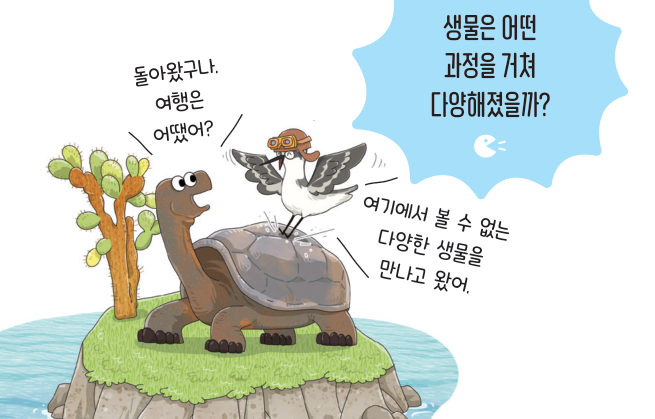
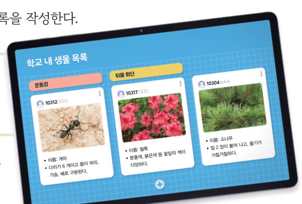
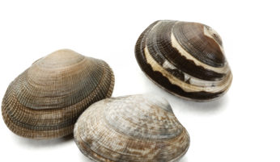
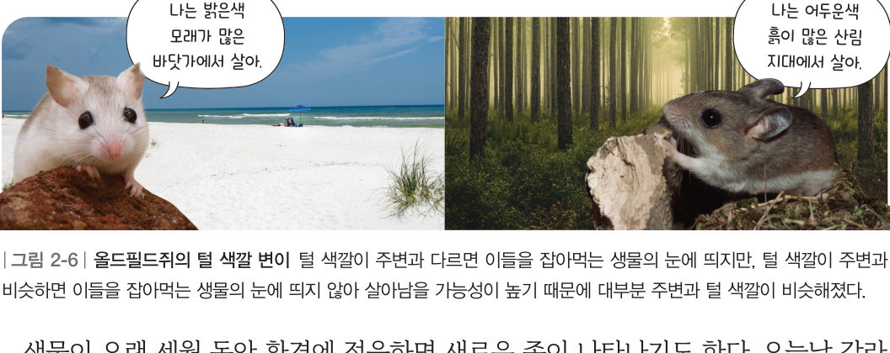
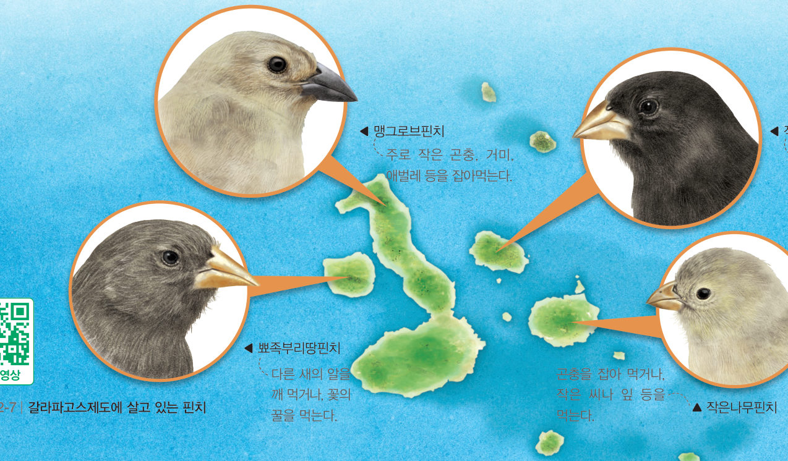
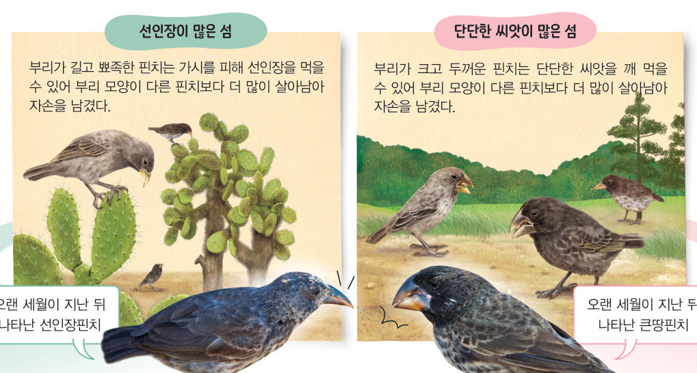

지구에 살고 있는
다양한 생물
“돌아왔구나. 여행은 어땠어?” “여기에서 볼 수 없는 다양한 생물을 만나고 왔어.” 생물은 어떤 과정을 거쳐 다양해졌을까? 학교의 생물 목록을 만들어 생물다양성을 비교하고, 가상 갈라파고스 섬에서 핀치의 부리가 세대를 거치며 변하는 모습을 관찰해 보자.
얕은 바닷속을 살펴보니 초록색 숲에 다양한 생물이 살고 있어. 이 숲을 이루는 잘피는 산호처럼 바닥에 붙어 이동하지 않고, 다른 생물에게 보금자리를 제공해. 하지만 잘피는 산호와 다른 생물 무리로 분류해.
생물다양성은 무엇을 뜻할까?
지금까지 지구의 여러 지역에서 수많은 종의 생물이 확인되었다. 또한 계속해서 새로운 종이 확인되고 있어, 과학자들은 지구에 천만 종 이상의 생물이 살고 있을 것으로 예상한다. 특정 지역에 살고 있는 생물의 다양한 정도를 생물다양성이라고 한다.
- 학교 내 서로 다른 장소 2 곳에서 각각 생물을 관찰하고, 스마트 기기로 촬영하여 공유 플랫폼에 올린다.
- 친구들과 함께 공유 플랫폼에서 생물 목록을 작성한다. (관찰 장소, 생물 이름, 촬영한 생물 모습, 생물 특징)

환경이 다른 학교 내 장소마다 살고 있는 생물의 종이 다른 것처럼 그림 2-4와 같이 환경이 다른 지구 곳곳의 지역마다 살고 있는 종이 다르다. 또 종의 수도 차이가 있어 지역마다 생물다양성이 다르다.

생물은 어떻게 다양해졌을까?

바지락은 그림 2-5와 같이 껍데기의 무늬와 색깔이 같은 종 내에서도 조금씩 다르다. 이처럼 같은 종의 생물이라도 생김새, 크기, 색깔 등 특징이 조금씩 다른 것을 변이라고 한다. 변이는 생물이 빛, 온도, 물, 먹이 관계 등 환경에 적응하면서 점점 차이가 커질 수 있다.

생물이 오랜 세월 동안 환경에 적응하면 새로운 종이 나타나기도 한다. 오늘날 갈라파고스제도에는 그림 2-7과 같이 여러 종의 핀치가 떨어져 살고 있다. 갈라파고스제도에 들어온 핀치 무리는 원래 한 종이었다. 이들은 환경이 조금씩 다른 여러 섬에 흩어져 살게 되었고, 오랜 세월이 지난 뒤 원래의 종과 다른 여러 종의 핀치가 나타났다.


한 종의 생물 무리에는 다양한 변이가 있으며, 그중 환경 적응에 알맞은 변이를 지닌 생물이 더 많이 살아남아 자손을 남긴다. 이 과정이 오랜 세월 동안 반복되면 원래의 종과 다른 새로운 종이 나타나 생물다양성이 커질 수 있다. 이와 같이 생물의 변이와 생물이 환경에 적응하는 과정은 오늘날 생물이 다양해진 주요 원인이다.
| ③ 같은 종의 생물이라도 생김새, 크기, 색깔 등 특징이 조금씩 다른 것을 변이라고 한다. | |
| ④ 환경이 다른 지구 곳곳의 지역마다 살고 있는 종은 같다. | |
| ⑤ 종의 수는 지역마다 차이가 있다. | |
| ⑥ 변이는 생물이 빛, 온도, 물, 먹이 관계 등의 환경에 적응하면서 점점 차이가 커질 수 있다. | |
| ⑦ 올드필드쥐가 사는 곳에 따라 털 색깔 차이가 큰 것은 변이의 한 예이다. |
1생물다양성과 변이
(2) : 같은 종의 생물이라도 생김새, 크기, 색깔 등 특징이 조금씩 다른 것
(3) 생물이 다양해지는 과정을 순서대로 늘어놓아 보자.
- 이 과정이 오랜 세월 반복되면 새로운 종이 나타날 수 있다.
- 한 종의 생물 무리에 다양한 변이가 있다.
- 무리 중 환경 적응에 알맞은 변이를 지닌 생물이 더 많이 살아남아 자손을 남긴다.